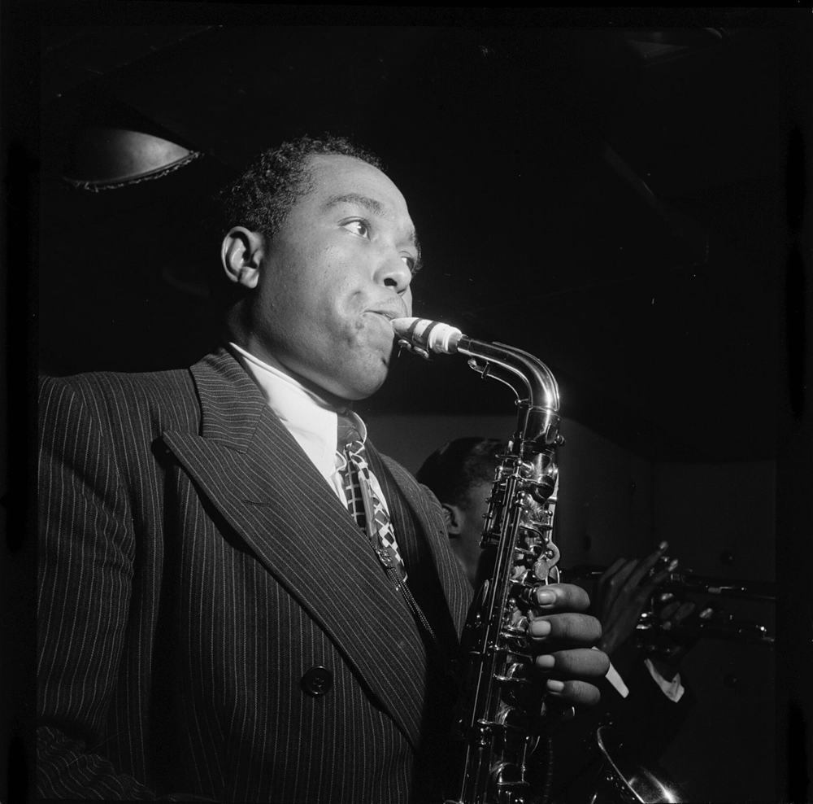
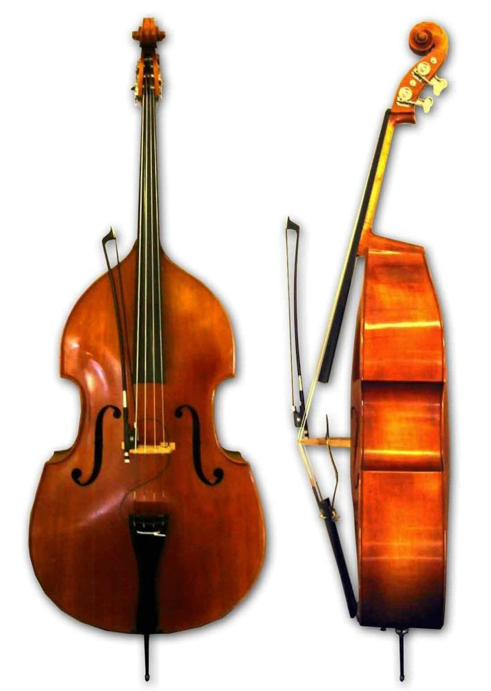

故事
她當了大約二十年的祕書，晚上才去唱歌。她是爵士歌手 Sheila Jordan，1928 年生在底特律。她在賓州的煤礦小鎮，由外公外婆帶大。
年輕時，她迷上了 Charlie Parker 的音樂。Parker 說她有一對值一百萬美元的耳朵。1962 年，她錄下專輯 Portrait of Sheila。

白天打字、晚上唱歌，她到快六十歲才全心做音樂。她最有名的，是只有人聲和貝斯的二重唱。2012 年，她拿到美國的爵士大師獎。下次聽到人聲和貝斯對話，想想那位白天當祕書的歌手。
故事後面
Sheila Jordan 年輕時迷上 Charlie Parker 的音樂，Parker 稱讚她有一對值一百萬美元的耳朵。
她當了大約二十年的祕書，白天打字、晚上唱歌，到快六十歲才全心做音樂。
她最有名的是只有人聲和貝斯的二重唱，二〇一二年獲得美國國家藝術基金會爵士大師獎。

這樣聽
聽人聲怎麼貼著貝斯走，兩個聲部像在聊天。
逐句英文
She worked as a secretary for about twenty years and sang at night.
She was jazz singer Sheila Jordan, born in Detroit in 1928.
She was raised by her grandparents in a Pennsylvania coal town.
As a young woman she fell for Charlie Parker's music.
Parker said she had million-dollar ears.
In 1962 she recorded the album Portrait of Sheila.
Typing by day and singing by night, she went full-time with music only near sixty.
She is best known for duets of just voice and bass.
In 2012 she was named an NEA Jazz Master.
Next time you hear a voice and a bass in conversation, think of the singer who was a secretary by day.
查證筆記與出處
她二零二五年過世：條目寫法，稿裡沒寫。「一百萬美元的耳朵」是 million dollar ears 的譯法。
一分鐘影片版在 Instagram @jazz101tw。